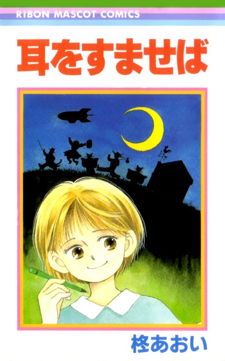

Anime
Anime
MangaWhisper of the Heart
耳をすませば
The anime takes the story to Film.
8.1AniList
—Animeter
1 epMovie
Is it worth watching?
The drop map is for series. Rate the film above to add to its Animeter score.